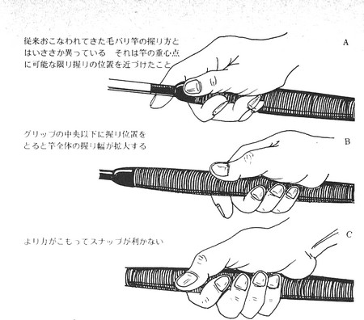
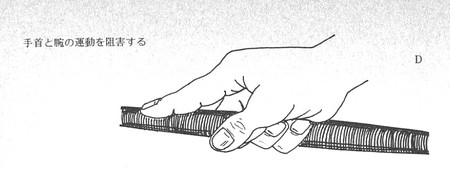
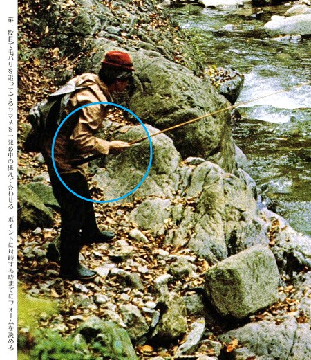

ティップス
キャストの前に テンカラ竿の握り方について
大学を卒業して社会人となり、フライフィッシングタックルを買えるようになってから、実に30年以上もテンカラ釣りとはご無沙汰であった。昨年、2020年の秋に、友人たちとニジマス釣り場において久しぶりにテンカラ釣りを楽しみ、その魅力にあらためて感動しました。それ以来、この釣法のことをインターネットいろいろと調べてみた。
ウェブサイト、ブログ、YouTube、など、いろいろと見て回っているうちに、？？？ と疑問に思える点を発見した。
テンカラ竿のグリップの、どこを、どんなふうに握るか？ ということである。
現在、インターネットにおいて大半の記事や動画で紹介、解説されている握り方は、グリップの竿尻付近を持つ握り方である。以下、いくつか例を示す。
ウェブサイト
Honda 釣り倶楽部
ヤマメ・アマゴ・イワナを和式毛バリでねらう
釣り方：STEP 1 ポイントに上手く振り込んでみよう
この記事では、レベルラインとテーパーラインとで、異なる握り方が紹介されている。
そして、石垣尚男氏によるアドバイスとして次のような記述がある。
レベルラインの場合、振り込みで大切なのはサオを振るスピード。（中略） 軽いレベルラインでも、充分なスピードでサオを振ればスムーズに毛バリを飛ばすことができる
つり人オンライン
イワナ・ヤマメ・マス釣り／10分で分かる！
テンカラ釣りキャスティング入門
この記事では、吉田孝氏がとてもわかりやすいイラストと解説文で解説されており、下記の記述がある。
サオの握り方は基本的に自由。実際にいろいろな人に教えてきた経験からも、自然に握りやすい持ち方をしてもらえばまず問題ない。
記事の最後に掲載されている吉田氏の釣り方を見ていただければ、やはりグリップの竿尻付近を握っていることがわかる。ほとんど竿尻が手のひらの中に入っているほどである。
TouTube、Vimeo などのオンライン動画
PART2 毛バリを流れに！キャスティングをマスター
出典： SHIMANO TV公式チャンネル
How to Cast with Tenkara - learning tenkara casting
出典：Tenkara USA社
Tenkara Masters - Lessons with Dr. Ishigaki and Sakakibara Masami 出典：Tenkara USA社
久しぶりにテンカラについて調べたので、どういう経緯で「現在の主流」がレベルラインになっていて、テーパーラインが過去の遺物のように扱われているのかもわからなかったが、以下のような疑問点を感じた。
- 果たして、レベル、およびテーパーというラインの違いで、竿の握り方を変える必要があるのか？
Honda 釣り倶楽部の記事で石垣尚男氏が解説されているように、レベルラインを使う場合には、ロッドをより速く振ることが必要ならば、グリップの上部、すなわち竿の重心点に近い位置を握り、がまかつのウェブサイトで説明されているように、
「竿のモーメント：重心位置（cm）×竿の自重（kg）」
が小さくなるようにした方が、手首のスナップが素早く効き、楽に長時間のキャストを続けられると考える。
余談だが、がまかつ社が自社製ロッドの特性を表すのにこの「モーメント」という指標を使っていることは、Teton Tenkara というアメリカのブログ内の記事で初めて知った。 - Tenkara USA、 Gallado 氏のYouTube 動画にて、グリップの下方、竿尻を持つことで、竿を振る時にてこの作用でストロークが大きくなり、小さな動作でも楽にキャストが出来るという解説をされていた。確かにその利点はあるかもしれないが、反面、魚が素早く毛バリに出た時に、大振りになってしまい、合わせが遅れるという欠点があると思う。
合わせのタイミングは、魚種、ポイント、季節、使うフライの種類などでさまざまに変わると思われるが、自分の思った瞬間に竿を立てて、タイムラグ無しで毛バリを掛けるためには、スナップの効く、グリップ上部を握る方が合理的だと考える。
下記の動画の冒頭では、合わせが遅れているシーンが見られる。
テンカラ入門 CHAPTER6 アタリと取り込み 出典：Honda 釣り倶楽部 - Tenkara USA の Gallado 氏の解説のように、人差し指を伸ばしてグリップに添える握り方は、短く軽い竿なら良いと思う。しかし、現在の竿は、素材・製法の進歩によりかなり軽くなったとは言え、3.6m以上もある長い竿を１日振り続けたら、この握り方では手首にかなり負担がかかると思われる。事実、ネット上の記事にはそうした感想も見られた。
また、人差し指を伸ばして握ることにより、キャストの精度が向上するという解説もあったが、作者が行ってみたところでは、さほど劇的な効果は無いように感じられた。
先人から学ぶ
以下、作者がテンカラ釣りを始めた頃の参考書や、最近購入した参考書の解説を引用して、再考してみる。また、Patagnia 社の動画にも非常に参考になる点があったので、これについても考察する。
毛バリ釣りの楽しみ方―ヤマメ・イワナのテンカラ釣り入門 桑原玄辰著 ?広済堂出版 1978年刊
竿に合ったラインを使い、正しいキャスティングさえ行なえば、思ったより簡単に毛パリを狭いポイントに振り込むことができるものではあるが、ここで特に取り上げなければならないことは、グリップの握り方であり、腕の作用といってもどちらかというと、手首の運動による竿操作の方が、はるかにウエイトを占めるものである。
竿を振りよくするには重心位置をできるだけ手元に近づけなければならないことは、竿の項においてすでに述べてきたが、カウンターウエイト的効用をさらに拡大する意味で、私はかなり以前から握りの長さを40センチぐらいにした。このグリップの長さで竿を仕上げると、通常の竿の重心点が竿尻から78センチあるものが、グリップの重みで70センチに近づけることが出来た結果、従来の竿にはない竿先の軽いスタイルの竿となった。もちろん竿の自重は120グラムで握りの重みは竹組みの計算に入れてあったわけである。このような竿をさらに使いよく握るのには、と研究した結果、グリップの中央より前方、つまり元竿とグリップの境目に親指と人差指をかけることにしたのである。グリップの握る位置によってカウンターウエイトが有効に働くとしたら、できるだけ竿の重心点に近づけて握ることで、手首のスナップを利かせれば、穂先の振幅を最小限度にとどめても、穂先にシャープな運動を与えることができることに気づいたのである。
グリップの握り方は図のＡからＤまで大別して、四つの形に分けられる。


４種類のグリップの握り方
上から順に、Ａ、Ｂ、Ｃ、Ｄ図のＡの形は私が前述の理由から割り出して従来の握り方と変えた握り方をしている。グリップの先端を握っており、重心点の位置に近づけて握る極限である。手首のスナップが最も有効に働く握り方である。
図Ｂはグリップの中央を握っている。この握り位置で竿を振ると、手加減を越えて竿が大振りになる。
図Cは指で握るのでなく掌で握りしめている形であり、Ｂよりさらに力が入り、手首のスナップが利かない。いいかえれば手首が柔らかく動かない。指先で物を握らない時が一番手首が柔らかく動くのである。
図Ｄのように竿を握った場合、一応外観はしまった感じにとれるが、これも竿の前後振りの時手首が硬く、穂先の振りにシャープな切れがなくなるのである。
以上グリップの握り方についていえることは、必ず中央より上部を握ることであり、竿尻を握ることは、この釣りでは致命傷ともいえ、合わせ切れはもちろんのこと、竿の大振りにより、ヤマメに感知されやすい。

青丸の中で黒く見えているのが、かなり長くあつらえられた
グリップ。その先端を握っているのがわかる。
精鋭たちのテンカラ・テクニック
堀江渓愚著 山と溪谷社 1989年刊

出典：精鋭たちのテンカラ・テクニック
この本には、次のような解説がある。
竿の握り方
グリップの上端部を小指、中指、薬指の三本でしっかり握り、人差し指と親指は軽く添える程度にする。五本の指全部でギッチリ握ってしまうと、腕全体の筋肉がこわばり、スナップの効きが悪くなる。
堀江渓愚のテンカラ毛バリ術
別冊フィッシング 第 50号 ? 廣済堂出版 1998年刊

出典：堀江渓愚のテンカラ毛バリ術
Patagonia 社 「完全なる釣り人」
イタリア、セージア渓谷における
アルトゥロ・プーニョ氏の伝統的毛バリ釣り
老釣り師プーニョ氏を描いた、この18分間の美しい動画の中からは、実に多くのことを学ぶことができた。彼はヘーゼルナッツの木から毛バリ釣り用の竿を自作し、牡馬の毛からラインを編み、バイスも使わず野生の鳥の毛で極めてシンプルな毛バリを巻く。
木製の、４～５メートルの長竿となれば、かなり重いと思われるが、彼が軽々と操っているのを見ると、意外と軽く作られているのかもしれない。竿にグリップは付けられていないが、竿尻からおよそ 40cm ほどの所を握っている。そうしなければすぐに疲れるであろうし、あれほど軽々とは振りこなせないはずである。
動画の中で、プーニョ氏、そして>ジャーナリストのマウロ・マッツォ氏は、次のようなことを語ってくれた。
- 自分が学んだことを他者に教えてはならない。自己本位かもしれないが、それは川との関係から自分で学んだことではない。真の観察者ではない。
- ジャーナリスト マウロ・マッツォ氏：アルトゥロも私が出会った他の偉大な釣り人も、自己本位なやり方がある。基本的に彼らは自身のやり方や知識を語らない。彼は自分のやっていることの多くを説明せず、自分で解決するように仕向ける。
彼にはわかるんだ。誰かが教えてくれたことだけをただやっていても、釣りの世界では優れた釣り人にはなれないと。他の世界で、優れた芸術家や音楽家になれないように。彼は頭を使うことを教えてくれる。これは川だけではなくーー日々の生活でも必要なことだ。
グリップの上端、ブランクに触れるあたり
利点： ブランクに直接指が触れることにより、竿からの情報を受ける感度が良くなる。 参考 ブログ TenkaraTalk Tenkara Rod Grip & Sensitivity
ネット上では、固定式ロッドのコルクグリップとグリップなし（基本的にはブランクの延長線上にあるフレア状のもの）について、健全な議論が行われています。私はコルク製のグリップの方が好きです。一般的に言われていることとは逆に、私にとっては重量とは関係ありません。グリップのないロッドは細すぎて、しばらくすると手が痙攣してしまいます（おそらく手根管症候群の兆候でしょう）。しかし、多くの人がグリップレスのロッドをとても快適だと感じています。私は、コルク製のグリップは濡れても滑らないし、常に温かく居心地がよく、人間工学に基づいた膨らみや先細りの形状をしていて、角張って冷たくロボットのようなグラファイト製のハンドルとは対照的なところが好きです。でも、それは私だけです。そうは言っても、コルクレスのロッドには1つの利点があります。それは、中間材（つまりコルク製のインシュレーター）を排除することで、ストライクの伝達が良くなることです。私が普段行っている釣りでは、目視でストライクを確認できることが多いのですが（フライでもラインでも）、それが不可能な状況もあり、フックをセットするタイミングを知るには感覚で判断するしかありません。時にはフライやラインが見えないこともあります。だから......コルクグリップは好きだけど、微妙なストライクも伝えてほしいという人は、グリップを調整してみてください。やり方は簡単です。典型的なテンカラスタイルでロッドを持ち、ハンドルを少しだけ握って、人差し指がコルクではなくブランクにかかるようにするだけです（上の写真参照）。これで、ライン、フライ、そして（できれば）魚に何が起こっているのかを把握することができます。 www.DeepL.com/Translator（無料版）で翻訳しました。作者の思うには、グリップの竿尻付近を持つ握り方は、ある程度経験を積んできたベテランの方が行うには問題無いが、初心者、女性、子供さんには向いていないと思う。
欠点：
グリップの中ほど
利点：
欠点：
グリップの下端
利点：
欠点：
テンカラ竿のグリップの長さの意味
テンカラ竿のグリップの形状
http://www.kamiiida.co.jp/F1/tenkara_index.htm EVA素材のひょうたん型グリップはロングサイズにすることにより、よく手に馴染み操作性も向上。カウンターウェイト
フライフィッシングではリールが重みとなる
餌釣りの竿にはあれほど長いグリップは付いていない
https://search.kakaku.com/%83_%83C%83%8f%20%83%8d%83b%83h%20%8ck%97%ac%8a%c6/?category=0009_0004_0016&sort=clkrank_d
https://paypaymall.yahoo.co.jp/store/zeniya-tsurigu/item/116138/?sc_e=afvc_shp_2801420
どのように握るか？
人差し指をグリップに添えて伸ばす方法
スーツケースのハンドルを握るような方法
フライフィッシングにおけるVグリップ
親指をグリップに添えて伸ばす方法
フライフィッシング的 サム・オン・トップ
ティップス 目次へ
サイトマップ
ホームへ
お問い合わせ